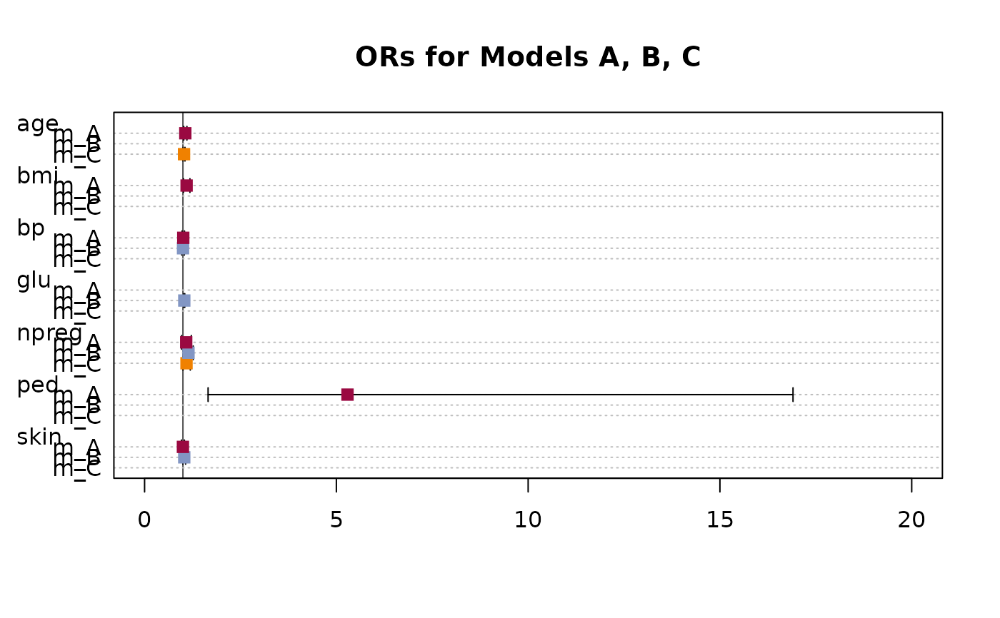

TMod.RdCollect the coefficients and some qualifying statistics of linear models and organize it in a table for comparison and reporting. The function supports linear and general linear models.
TMod(..., FUN = NULL, order = NA)
ModSummary(x, ...)
# S3 method for lm
ModSummary(x, conf.level = 0.95, ...)
# S3 method for glm
ModSummary(x, conf.level = 0.95, use.profile = TRUE, ...)
# S3 method for TMod
plot(x, terms = NULL, intercept = FALSE, ...)
# S3 method for TMod
print(x, digits = 3, na.form = "-", ...)a (general) linear model object.
a list of (general) linear models.
the level for the confidence intervals.
function with arguments est, se, tval, pval, lci, uci to display the coefficients. The default function will display the coefficient and significance stars for the p-values.
row of the results table to be used as order for the models (as typically "AIC"). Can be any label in the first column of the results table. Default is NA for no special order.
a vector with the terms of the model formula to be plotted. By default this will be all of them.
logical. Defines if profile approach should be used, which normally is a good choice for small datasets. Calculating profile can however take ages for large datasets and not be necessary there. So we can fallback to normal confidence intervals.
logical, defining whether the intercept should be plotted (default is FALSE).
integer, the desired (fixed) number of digits after the decimal point. Unlike formatC you will always get this number of digits even if the last digit is 0.
character, string specifying how NAs should be specially formatted.
If set to NULL (default) no special action will be taken.
In order to compare the coefficients of linear models, the user is left to his own devices. R offers no support in this respect. TMod() jumps into the breach and displays the coefficients of several models in tabular form. For this purpose, different quality indicators for the models are displayed, so that a comprehensive comparison of the models is possible. In particular, it is easy to see the effect that adding or omitting variables has on forecast quality.
A plot function for a TMod object will produce a dotchart with the coefficients and their confidence intervals.
character table
r.full <- lm(Fertility ~ . , swiss)
r.nox <- lm(Fertility ~ . -Examination - Catholic, swiss)
r.grp <- lm(Fertility ~ . -Education - Catholic + CutQ(Catholic), swiss)
r.gam <- glm(Fertility ~ . , swiss, family=Gamma(link="identity"))
r.gama <- glm(Fertility ~ .- Agriculture , swiss, family=Gamma(link="identity"))
r.gaml <- glm(Fertility ~ . , swiss, family=Gamma(link="log"))
TMod(r.full, r.nox, r.grp, r.gam, r.gama, r.gaml)
#> Waiting for profiling to be done...
#> Waiting for profiling to be done...
#> Waiting for profiling to be done...
#> coef r.full r.nox r.grp r.gam
#> 1 (Intercept) 66.915 *** 51.101 *** 53.411 *** 63.709 ***
#> 2 Agriculture -0.172 * -0.026 -0.096 -0.175 *
#> 3 Examination -0.258 - -0.872 *** -0.129
#> 4 Education -0.871 *** -0.857 *** - -0.944 ***
#> 5 Catholic 0.104 ** - - 0.106 **
#> 6 Infant.Mortality 1.077 ** 1.493 ** 1.796 *** 1.174 **
#> 7 CutQ(Catholic)Q2 - - -0.035 -
#> 8 CutQ(Catholic)Q3 - - -5.780 -
#> 9 CutQ(Catholic)Q4 - - 5.939 -
#> 10 ---
#> 11 r.squared 0.707 0.566 0.611 -
#> 12 adj.r.squared 0.671 0.536 0.552 -
#> 13 sigma 7.165 8.511 8.359 -
#> 14 logLik -156.036 -165.243 -162.699 -156.506
#> 15 logLik0 - - - -186.992
#> 16 G2 - - - 60.971
#> 17 deviance 2105.043 3114.635 2795.124 -
#> 18 AIC 326.072 340.485 341.398 327.012
#> 19 BIC 339.023 349.736 356.199 339.963
#> 20 numdf 5 3 6 7
#> 21 dendf 41 43 40 -
#> 22 N 47 47 47 47
#> 23 n vars 5 3 4 5
#> 24 n coef 6 4 7 6
#> 25 F 19.761 18.699 10.454 -
#> 26 p 5.594e-10 0.000 0.000 -
#> 27 MAE 5.321 6.826 6.079 5.330
#> 28 MAPE 0.079 0.098 0.095 0.078
#> 29 MSE 44.788 66.269 59.471 45.342
#> 30 RMSE 6.692 8.141 7.712 6.734
#> 31 McFadden - - - 0.163
#> 32 McFaddenAdj - - - 0.131
#> 33 Nagelkerke - - - 0.727
#> 34 CoxSnell - - - 0.727
#> r.gama r.gaml
#> 1 48.790 *** 4.184 ***
#> 2 - -0.002 *
#> 3 0.050 -0.003
#> 4 -0.808 *** -0.015 ***
#> 5 0.089 * 0.001 *
#> 6 1.290 ** 0.017 **
#> 7 - -
#> 8 - -
#> 9 - -
#> 10
#> 11 - -
#> 12 - -
#> 13 - -
#> 14 -159.674 -157.224
#> 15 -186.992 -186.992
#> 16 54.636 59.534
#> 17 - -
#> 18 331.347 328.449
#> 19 342.448 341.400
#> 20 6 7
#> 21 - -
#> 22 47 47
#> 23 4 5
#> 24 5 6
#> 25 - -
#> 26 - -
#> 27 5.869 5.458
#> 28 0.086 0.080
#> 29 52.015 47.361
#> 30 7.212 6.882
#> 31 0.146 0.159
#> 32 0.119 0.127
#> 33 0.688 0.718
#> 34 0.687 0.718
# display confidence intervals
TMod(r.full, r.nox, r.gam, FUN = function(est, se, tval, pval, lci, uci){
gettextf("%s [%s, %s]",
Format(est, fmt=Fmt("num")),
Format(lci, digits=3),
Format(uci, digits=2)
)
})
#> Waiting for profiling to be done...
#> coef r.full r.nox
#> 1 (Intercept) 66.915 [45.294, 88.54] 51.101 [28.928, 73.27]
#> 2 Agriculture -0.172 [-0.314, -0.03] -0.026 [-0.173, 0.12]
#> 3 Examination -0.258 [-0.771, 0.25] -
#> 4 Education -0.871 [-1.241, -0.50] -0.857 [-1.205, -0.51]
#> 5 Catholic 0.104 [0.033, 0.18] -
#> 6 Infant.Mortality 1.077 [0.306, 1.85] 1.493 [0.608, 2.38]
#> 7 ---
#> 8 r.squared 0.707 0.566
#> 9 adj.r.squared 0.671 0.536
#> 10 sigma 7.165 8.511
#> 11 logLik -156.036 -165.243
#> 12 logLik0 - -
#> 13 G2 - -
#> 14 deviance 2105.043 3114.635
#> 15 AIC 326.072 340.485
#> 16 BIC 339.023 349.736
#> 17 numdf 5 3
#> 18 dendf 41 43
#> 19 N 47 47
#> 20 n vars 5 3
#> 21 n coef 6 4
#> 22 F 19.761 18.699
#> 23 p 5.594e-10 0.000
#> 24 MAE 5.321 6.826
#> 25 MAPE 0.079 0.098
#> 26 MSE 44.788 66.269
#> 27 RMSE 6.692 8.141
#> 28 McFadden - -
#> 29 McFaddenAdj - -
#> 30 Nagelkerke - -
#> 31 CoxSnell - -
#> r.gam
#> 1 63.709 [44.294, 83.44]
#> 2 -0.175 [-0.318, -0.04]
#> 3 -0.129 [-0.626, 0.36]
#> 4 -0.944 [-1.252, -0.63]
#> 5 0.106 [0.035, 0.18]
#> 6 1.174 [0.479, 1.84]
#> 7
#> 8 -
#> 9 -
#> 10 -
#> 11 -156.506
#> 12 -186.992
#> 13 60.971
#> 14 -
#> 15 327.012
#> 16 339.963
#> 17 7
#> 18 -
#> 19 47
#> 20 5
#> 21 6
#> 22 -
#> 23 -
#> 24 5.330
#> 25 0.078
#> 26 45.342
#> 27 6.734
#> 28 0.163
#> 29 0.131
#> 30 0.727
#> 31 0.727
# cbind interface is not supported!!
# d.titanic <- reshape(as.data.frame(Titanic),
# idvar = c("Class","Sex","Age"),
# timevar="Survived",
# direction = "wide")
#
# r.glm0 <- glm(cbind(Freq.Yes, Freq.No) ~ 1, data=d.titanic, family="binomial")
# r.glm1 <- glm(cbind(Freq.Yes, Freq.No) ~ Class, data=d.titanic, family="binomial")
# r.glm2 <- glm(cbind(Freq.Yes, Freq.No) ~ ., data=d.titanic, family="binomial")
d.titanic <- Untable(Titanic)
r.glm0 <- glm(Survived ~ 1, data=d.titanic, family="binomial")
r.glm1 <- glm(Survived ~ Class, data=d.titanic, family="binomial")
r.glm2 <- glm(Survived ~ ., data=d.titanic, family="binomial")
TMod(r.glm0, r.glm1, r.glm2)
#> Waiting for profiling to be done...
#> Waiting for profiling to be done...
#> Waiting for profiling to be done...
#> coef r.glm0 r.glm1 r.glm2
#> 1 (Intercept) -0.740 *** 0.509 *** 0.685 *
#> 2 Class2nd - -0.856 *** -1.018 ***
#> 3 Class3rd - -1.596 *** -1.778 ***
#> 4 ClassCrew - -1.664 *** -0.858 ***
#> 5 SexFemale - - 2.420 ***
#> 6 AgeAdult - - -1.062 ***
#> 7 ---
#> 8 logLik -1384.728 -1294.278 -1105.031
#> 9 logLik0 -1384.728 -1384.728 -1384.728
#> 10 G2 -0.000 180.901 559.396
#> 11 AIC 2771.457 2596.555 2222.061
#> 12 BIC 2777.153 2619.342 2256.241
#> 13 numdf 1 4 6
#> 14 N 2201 2201 2201
#> 15 n vars 0 1 3
#> 16 McFadden 0.000 0.065 0.202
#> 17 McFaddenAdj -0.001 0.062 0.198
#> 18 Nagelkerke 0.000 0.110 0.314
#> 19 CoxSnell 0.000 0.079 0.224
#> 20 Kendall Tau-a 0.000 0.124 0.227
#> 21 Somers Delta 0.000 0.283 0.519
#> 22 Gamma - 0.386 0.623
#> 23 Brier 0.219 0.200 0.162
#> 24 C 0.500 0.642 0.760
# plot OddsRatios
d.pima <- MASS::Pima.tr2
r.a <- glm(type ~ npreg + bp + skin + bmi + ped + age, data=d.pima, family=binomial)
r.b <- glm(type ~ npreg + glu + bp + skin, data=d.pima, family=binomial)
r.c <- glm(type ~ npreg + age, data=d.pima, family=binomial)
or.a <- OddsRatio(r.a)
#> Waiting for profiling to be done...
or.b <- OddsRatio(r.b)
#> Waiting for profiling to be done...
or.c <- OddsRatio(r.c)
#> Waiting for profiling to be done...
# create the model table
tm <- TMod(m_A=or.a, m_B=or.b, m_C=or.c)
# .. and plotit
plot(tm, main="ORs for Models A, B, C", intercept=FALSE,
pch=15, col=c(hred, hblue, horange),
panel.first=abline(v=1, col="grey30"))
